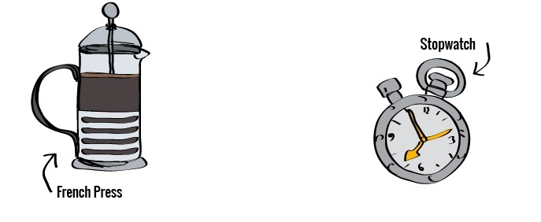
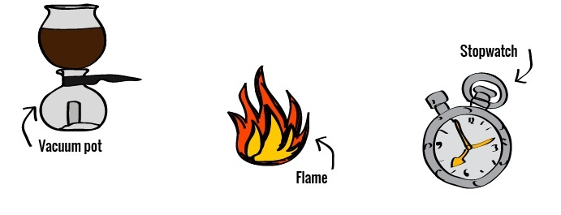
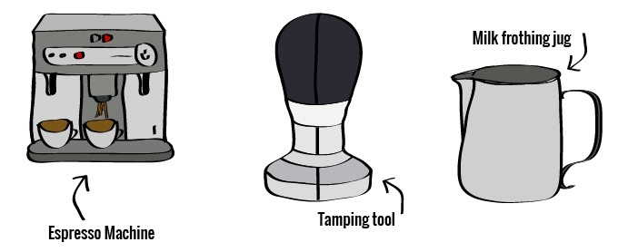
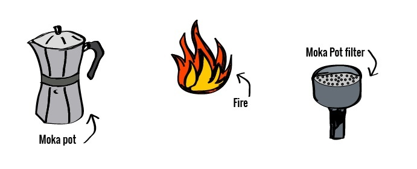

The Ways of Coffee Making
French Press
The French press is the unofficial mascot of home brewed coffee; it’s been steeping coffee in households since before your grandparents were born, and it has a very loyal, cult following among the home barista community.
Time:from Bean > Brew----- It's not super quick, but not super slow either. From (almost) boiling the water, to steeping and plunging, you’ll need about 10 or so minutes. While steeping, however, your French press will need your undivided attention.
Resulting brew:A unique, non-harsh aromatic coffee that's full of flavor, particular to your beans. It will, however, be a little sediment-y, so avoid drinking the last few sips of each cup
Skill level required:Making a French press is an easy task. Making the perfect French press is a little harder. All-in-all, if you follow a very clear set of instructions, such as these, you’ll get what you’re looking for, no problems.
PROS
- Distinct and unique flavor
- Easy to use with the right advice
- Ability to make large pots of coffee without having to repeat the process
CONS
- Taste may not be your cuppa tea
- Steeping is hard to perfect and is a standard screw up with the French press
Vacuum Pot(Siphon Coffee)
Also known as the siphon pot, making coffee this way is unique as it comes; it’s a combination of brewing methods; a full immersion brew (as your coffee goes into the water) but also uses siphon action to create a great tasting cup. It’s not a simple way to brew coffee, in fact, it requires an enormous amount of effort and process, so you won’t want to use it daily (unless you’ve got nothing else to do). Some swear by the great tasting cup it yields, however, we believe its more of a novelty/show-off brew style – whip it out when your friends are around and show them how advanced you are in the art of the brew. Just make sure you warn your neighbors before using one, otherwise they may think you’ve taken up cooking methamphetamines.
Time:from Bean > Brew----- Allow yourself about 10 minutes. We must note here; cleaning the siphon pot is a bitch.
Resulting brew:Very clean and full of flavor – when done correctly. Since your brew is only touching glass, it will be the purest tasting coffee you sip in a while.
Skill level required:Its quite involved and you’ll need to follow steps carefully. If you’re a scientist, or you happen to cook meth, you'll have no trouble.
PROS
- When done right it produces the best tasting coffee, according to some experts
- Your friends will think you’re a total coffee expert
CONS
- It's an advanced brewing method. Prepare to make mistakes
- Very fragile – don’t expect to take it anywhere
- If you just want a coffee, this thing is a pain in the arse
Espresso Machine
Today they come in various shapes and sizes, with loads of features and gimmicks. Don't get confused by flash machines though because the basics are the same: pressurized water is pushed through a chamber/puck of finely ground coffee beans, through a filter, resulting in what we call a shot of espresso.
Time:from Bean > Brew----- It depends on your machine. A commercial machine may need 15-40 minutes to warm up, and a home-based machine may take only 3 minutes. Once warm, however, you’ll have your fix in 20-30 seconds.
Resulting brew:A shot of espresso, when done right, is strong, sharp and full of flavor. You can then add hot water to turn it into an Americano or froth some milk to make a milk based coffee.
Skill level required:It all depends on your machine - some will make a great shot almost automatically, others (the more commercial, manual types) will require a high level or skill, hence the need for barista schools.
PROS
- Fast to brew (once warmed up)
- Range in price (and quality) from relatively cheap to super expensive
- Brew highly concentrated, sharp caffeine brew
CONS
- Cheaper machines tend to give you less than ideal results
- Take up kitchen counter space
- An absolute b**ch to clean
Moka Pot
The magic behind the Moka pot is in its 3 chambered brew process. Water in the bottom chamber boils, and the steam causes pressure that pushes water up through the coffee grounds into the top chamber.
Time:from Bean > Brew----- Super fast – Once you've heated your water it should take no more than 5 minutes (a little longer if you use an induction stove). For that reason, it's the go-to option for caffeine deprived people when in a morning rush.
Resulting brew:Not quite an espresso shot, but close to it (if you use the right grind and the right technique). Expect a sharp and strong tasting coffee.
Skill level required:You don’t need to be a barista of any kind – once you have the right grind (which is the hardest part) it’s a relatively simple process – just fill the chambers, turn on the heat and keep a close eye on it.
PROS
- Super cheap coffee maker
- Quick to brew
- Very portable – you can even get mini pots that are perfect for traveling.
CONS
- low quality
- The risk of over and under extraction is high (depending on your grind finesse)